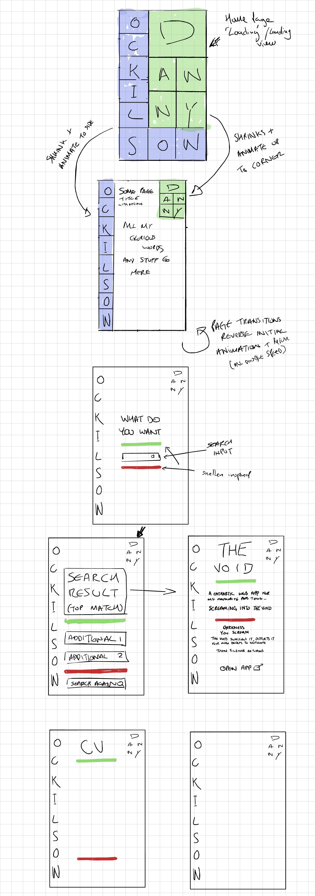
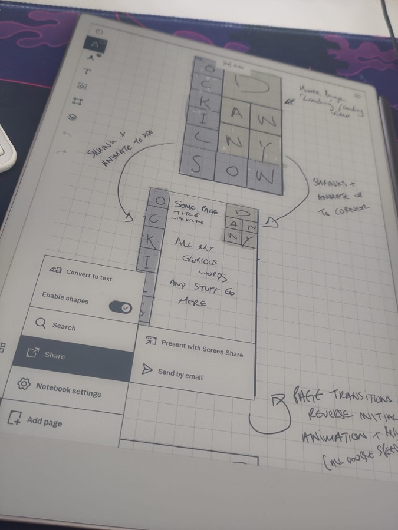
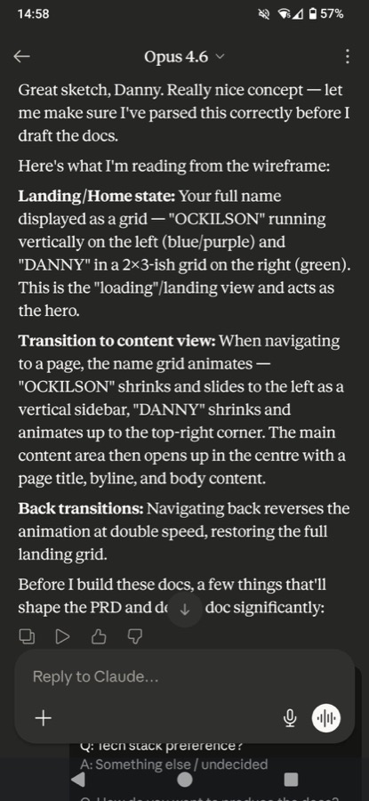
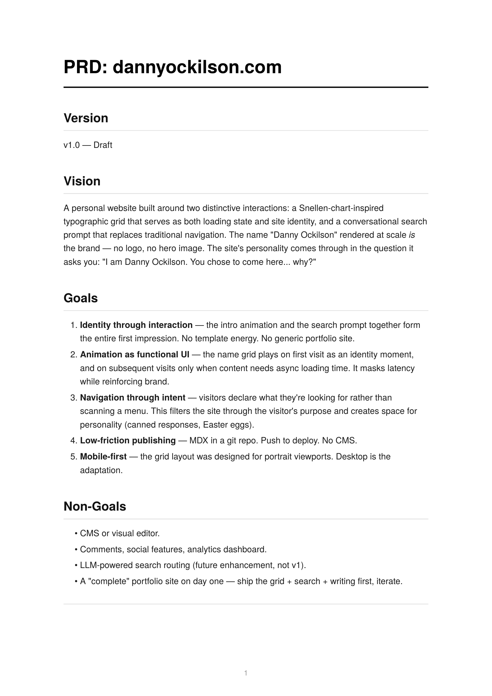
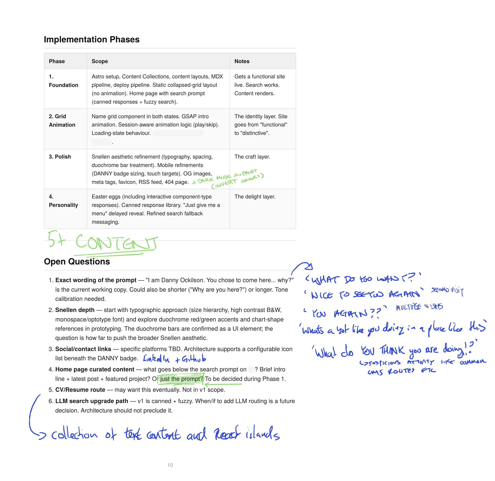
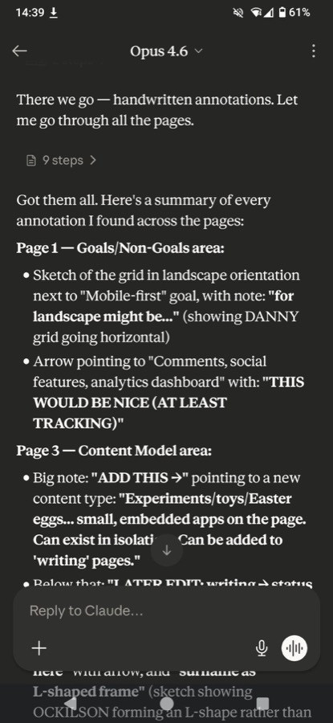
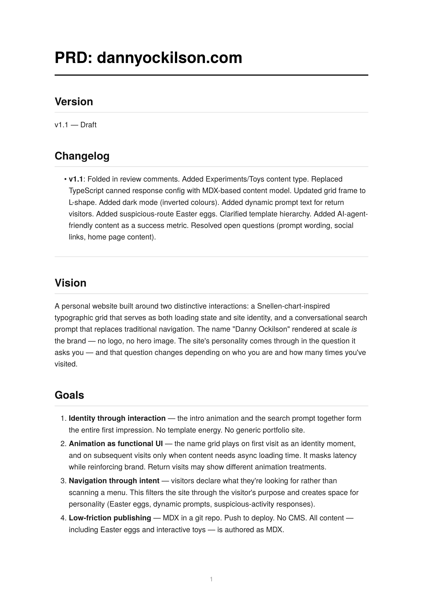
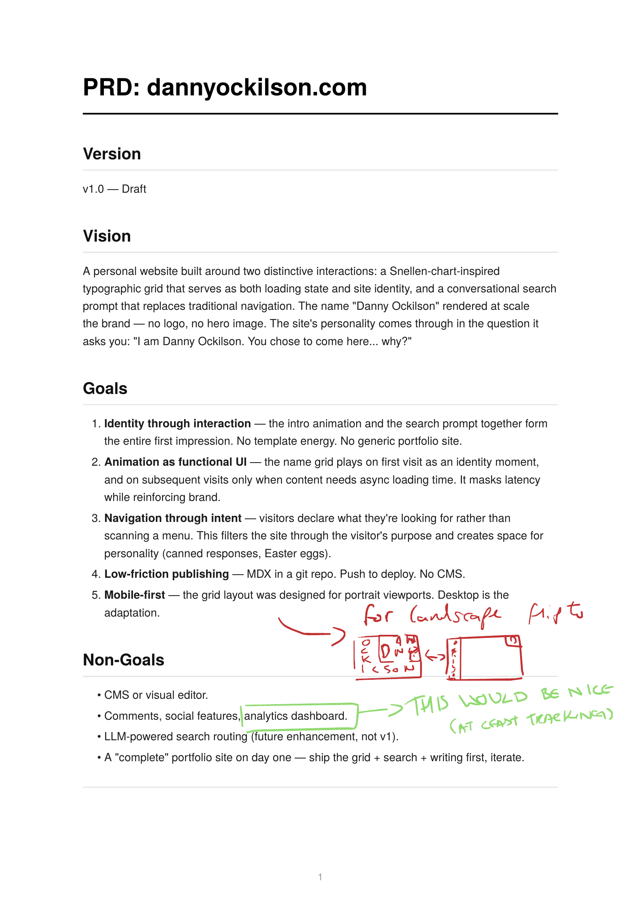
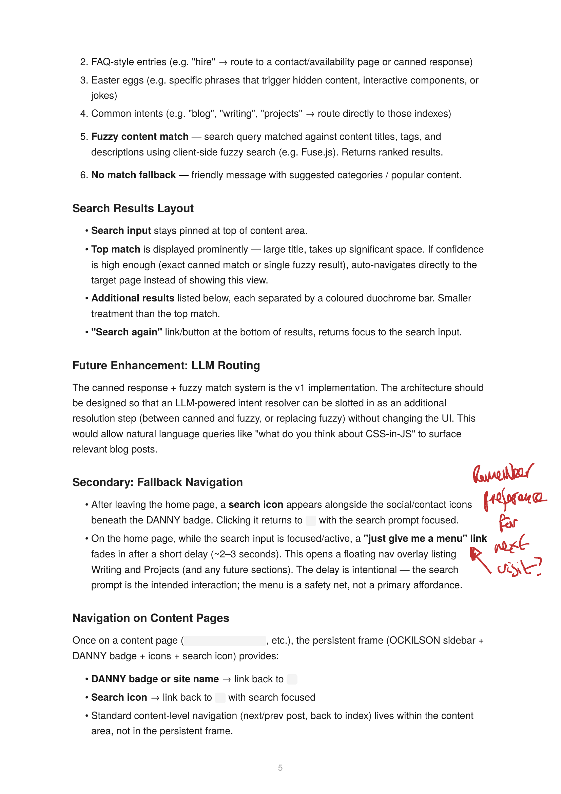
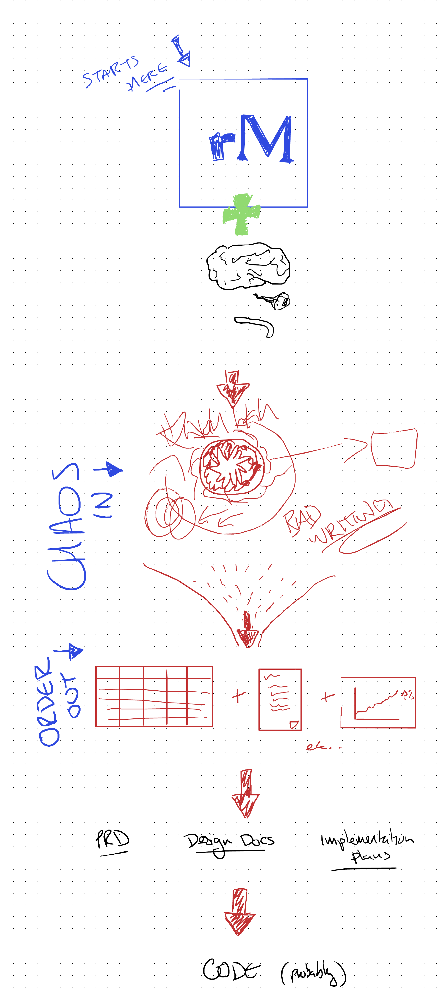

AI Adapting to You
Danny Ockilson
I saw the Gorillaz this weekend.
Maybe that's why mountains are on my mind...
"If the mountain won't come to Muhammad,
Muhammad must go to the mountain."
But what if AI can move the mountain?
Everyone says:
change how you work
to get the most out of AI.
What if that's backwards?
It's not wrong. I've done this at work —
changed processes to work better with AI tooling.
But what gets lost?
You lose the messy, creative, nonlinear thinking
that makes humans good at ideation.
The irony: AI is great at handling unstructured input,
yet we're told to give it structured input.
I think best with a pen.
Doodles, arrows, scribbles, brain dumps.
Or talking it out loud on a walk.
That's not going away.
Don't adapt yourself to AI.
Adapt AI to your existing flow.
The flow
I use a reMarkable — an e-ink tablet for handwriting.
But nothing here is specific to it.
A notebook, a whiteboard, a napkin — anything you think with.
Take a photo, export a PDF. The input medium is yours.

Actual reMarkable notes — wireframes, layouts, interaction ideas. Pure brain dump.

Share → Send by email. That's it.

"Great sketch, Danny..." — it parsed the grid layout,
the transitions, the navigation. From one page of scribbles.

A full PRD — vision, goals, non-goals, interaction design.
First draft, straight from the chaos.

Scribble feedback on the draft

Claude reads every annotation
The loop closes on paper.

v1.1 — every annotation addressed. Changelog and all.
Messy brain dump → AI bridge → Draft → Scribble feedback → Final document
Personal blog/website — designed this weekend
Brain dump on rM: page layouts, interaction patterns, the Snellen grid idea

A full PRD — vision, goals, non-goals, interaction design — from one page of scribbles.

Red ink = my feedback, written on the rM.
Upload the annotated PDF → Claude folds it in.
v1.1 with a changelog. Every red-ink note addressed.
Inferred intent, connected dots — things I didn't write explicitly.
Brain dumps contain more signal
than carefully typed prompts.
Because you don't self-censor.
This talk

The actual notes page for this talk.
I uploaded that page to Claude.
We built this entire talk from it.
You're watching the output of the process.
rM → PDF → Claude → Prompt
I'm building automation to close the loop.
This pattern applies beyond reMarkable —
voice, whiteboard, notebook, napkin sketch
any preferred thinking medium + AI bridge.
I didn't learn to think like AI.
I made AI learn to read my thinking.
Move the mountain.
Danny Ockilson